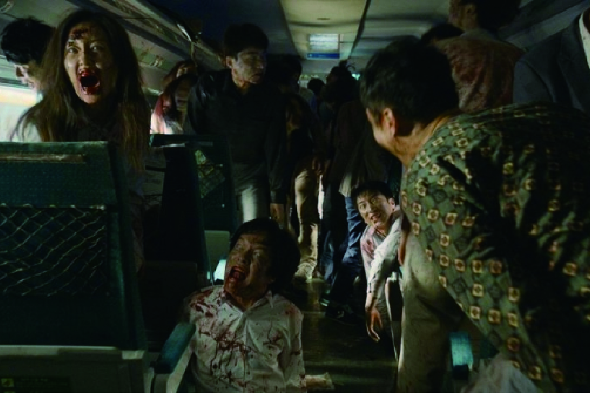
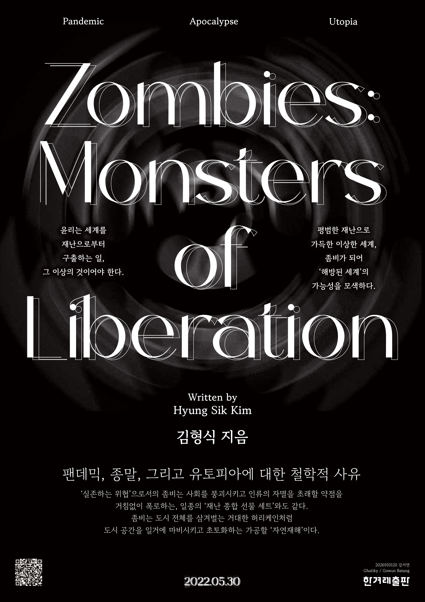

CHAPTER 01
UNREOCKED
좀비의 탄생과 진화
— 감염병 괴물의 문화사
부두교의 제의에 묶인 무력한 좀비에서부터 조지 로메로의 자본주의 비판적 언데드까지, 시대의 억압과 집단적 공포가 어떻게 생물학적 현상으로 구축되어 왔는지 추적합니다.
팬데믹, 종말, 그리고 유토피아에 대한 철학적 사유
좀비라는 렌즈로 감염병 팬데믹의 심층을 들여다보는 책. 재난과 일상, 죽음과 해방, 종말과 유토피아의 경계를 횡단하며 현대 자본주의 통치 권력이 선언한 예외상태의 민낯을 폭로하고, 그 절망의 파국 속에서 피어나는 급진적이고도 근본적인 연대의 상상력을 철학적으로 재구성합니다.
좀비는 인간의 살과 피를 탐하는 괴물에서 세계의 모순과 부조리를 고발하고, 재난 이후의 세계를 열어갈 주체로 거듭난다.
이 책은 좀비라는 대중문화 속 형상이 변화해 온 역사적 궤적을 맑스, 아감벤, 에스포지토 등의 철학을 통해 들여다봅니다. 아래 캔버스의 연결된 핵심 개념 노드를 클릭하여 유기적인 철학적 사유의 연결망을 깊이 탐색해 보십시오.
지도의 노드를 선택하면 상세한 철학적 해설이 여기에 출력됩니다.
좀비가 단순한 고립과 생존의 대상에서 마침내 경계를 돌파하고 자유로운 연대를 상상하기에 이르는 8가지 학술적 단계입니다.
부두교의 제의에 묶인 무력한 좀비에서부터 조지 로메로의 자본주의 비판적 언데드까지, 시대의 억압과 집단적 공포가 어떻게 생물학적 현상으로 구축되어 왔는지 추적합니다.
코로나19 팬데믹이 드러낸 현대 문명 일상의 근본적인 취약성과 함께, 통치 권력이 방역과 통제를 매개로 예외상태를 어떻게 상시화하고 격리와 생체 배제를 정당화하는지 성찰합니다.
개체적 자아의 붕괴를 뜻하는 감염과 집단적 좀비화의 역동을 통해, 질서정연한 생명 관리 아래 도사린 사회적 전파의 메커니즘과 그 너머에 요동치는 군중의 힘을 성찰합니다.
〈부산행〉부터 〈워킹 데드〉까지 파국의 시나리오들이 던지는 본질적 물음. 기존 시스템이 완전히 붕괴한 아포칼립스 한가운데에서 인간이 서로를 착취하는 야만을 넘어 연대하는 서사를 다룹니다.
좀비는 단순한 생물학적 시체인가 혹은 인간의 변종인가? 삶과 죽음, 인간과 비인간의 아슬아슬한 임계 경계에 놓인 괴물의 시각을 통해 통념적 윤리 의식을 허물고 새로운 존재 윤리를 타진합니다.
생화학적 재난과 전염의 비극 속에서도 중단 없이 작동하는 자본의 가혹한 증식 논리. 파국적 위기가 특정 자본가 계급에게 오히려 전면적인 사유화와 착취의 기회로 전환되는 모순을 해부합니다.
파국이 휩쓸고 간 어두운 대지 위에 다시 돋아나는 사회적 관계망. 생명 보존을 위한 생존 경쟁의 피로를 넘어 서로의 존재를 짊어지는 연대로서 구성해 가는 다른 세계의 대안 공동체적 윤리를 상상합니다.
좀비가 공포의 껍질을 찢고 마침내 기존 세계의 한계를 깨부수는 '해방의 열쇠'가 되는 전복의 지점. 지배 권력의 생명 정치를 무화하는 유토피아적 사유의 힘을 최종적으로 완성합니다.
도서 『좀비, 해방의 괴물』이 횡단하며 해석해 낸 대표적인 장르 서사 및 학술 철학 문헌들의 보관소입니다.

연상호 감독 신작. 초고층 빌딩 집단 감염사태에서 진화하는 감염자들에 맞서는 생존자들의 사투. 균사체로 연결된 하이브마인드 좀비를 통해 알고리즘 통제 사회를 예리하게 은유합니다.

한국형 K-좀비 대중화의 포문을 연 기념비적 명작. 밀폐된 고속열차 안에 갇힌 생존자들을 묘사하며 신자유주의 무한 경쟁 사회의 모순과 그 틈새에서 건져낸 이타적 연대를 탐구합니다.

〈부산행〉의 어둡고 쓸쓸한 프리퀄 애니메이션. 서울역 홈리스와 빈곤한 사회적 낙오자들의 절망을 통해, 재난이 불어닥쳤을 때 국가 통치 권력이 누구를 배제하고 사지로 내모는지 해부합니다.

세계적인 포스트 아포칼립스 스릴러의 고전. 좀비 바이러스로 문명이 완전히 소멸된 고립 무원의 세계에서, 살아남기 위해 매 순간 잔인한 도덕과 배제의 윤리적 딜레마에 맞닥뜨리는 생존자 군상을 다룹니다.

학술 연구자 김형식이 집필한 철학적 전작. 전 세계 대중문화 매체 속에 투영된 좀비의 표상을 역사적·사회학적 관점으로 집대성 분석하여, 본서 『좀비, 해방의 괴물』의 깊이 있는 이론적 모태가 되었습니다.

현대 이탈리아 사상가 조르조 아감벤의 주저. 주권 권력이 법 질서 바깥으로 선언해 내는 '예외상태'와, 그 그늘 아래 법적 권리를 거세당한 채 오직 물리적 목숨만 유지하는 '벌거벗은 생명'을 규명합니다.
시각적 불편함이나 낯선 텍스트에 민감하신 분들은 주의하시기 바랍니다.
당신은 이 기괴한 심연으로 진입하시겠습니까?
『좀비, 해방의 괴물』을 바탕으로 제작한 이미지, 움직이는 그래픽, 영상 아카이브입니다.

IMAGE ARCHIVE
GIF ARCHIVE
VIDEO ARCHIVE